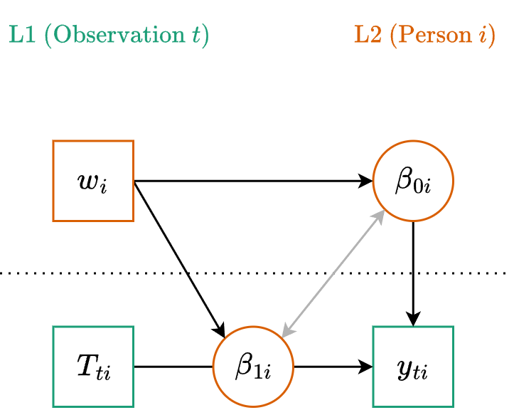
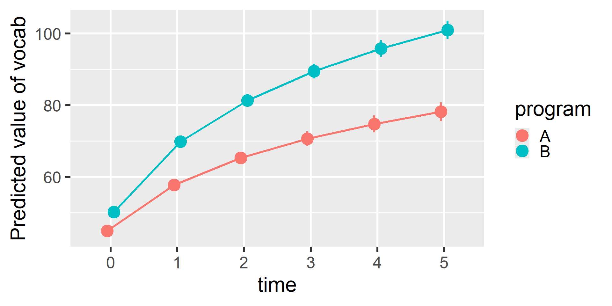
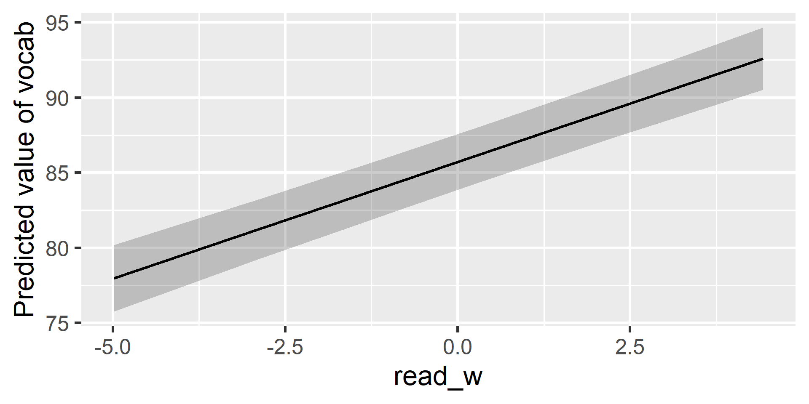
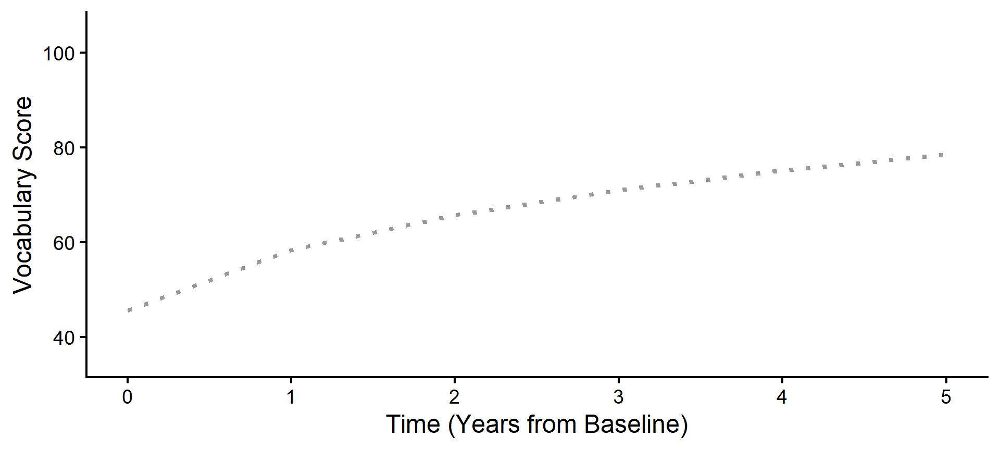
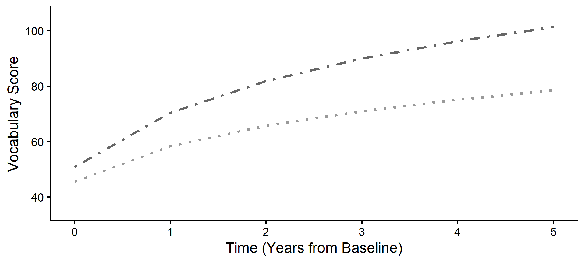
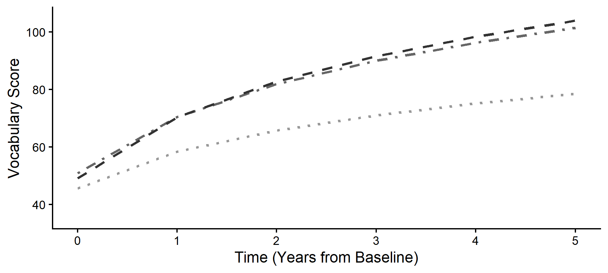
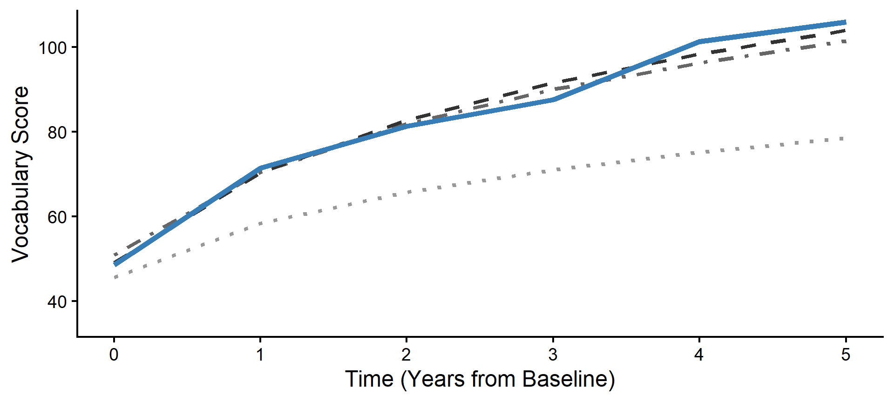
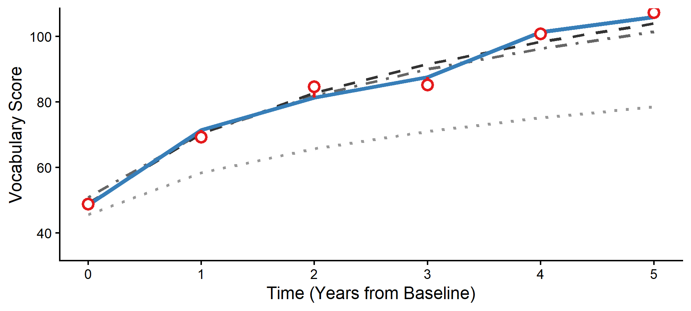

library(tidyverse)
library(glmmTMB)
library(easystats)
vocab <- read_csv("vocab_sim.csv") |>
# Center at Baseline, scale to Years
mutate(time = (age_months - 120) / 12)
fit_log <- glmmTMB(
vocab ~ 1 + log(time + 1) + (1 + log(time + 1) | subject),
data = vocab
)Multilevel Modeling
Predicting Change
Spring 2026 | CLAS | PSYC 894
Jeffrey M. Girard | Lecture 12b

Roadmap
- Time-Invariant Predictors
- Explaining the Baseline
- Explaining the Growth Rate
- Time-Varying Predictors
- Decomposing Predictors
- Explaining the Fluctuations
Time-Invariant Predictors
Reviewing the Unconditional Model
In 12a, we found that a logarithmic transformation of time best captured the vocabulary growth trajectory in our sample. This is an “unconditional” growth model because it contains no predictors other than time.
Explaining the Variance
Our unconditional model tells us the average starting point and the average rate of growth. It also tells us that individuals vary around both of those averages. Why are some individuals higher or lower than others?
We can now add Level 2 Predictors to try and explain that variation
These are “time-invariant” variables that differ between people but remain constant for a given person over time (e.g., traits, person characteristics)
For example, we might want to test if the reading
program(A vs. B) affects a child’s starting vocabulary or growth rate
Equations for Level 2 Predictors
Level One (Observation)
\[y_{ti} = \beta_{0i} + \beta_{1i} T_{ti} + \color{#4daf4a}{e_{ti}}\]
Level Two (Cluster)
\[\begin{align} \beta_{0i} &= \color{#377eb8}{\gamma_{00}} + \color{#377eb8}{\gamma_{01}} w_i + \color{#e41a1c}{u_{0i}} \\ \beta_{1i} &= \color{#377eb8}{\gamma_{10}} + \color{#377eb8}{\gamma_{11}} w_i + \color{#e41a1c}{u_{1i}} \end{align}\]
Note that the L2 variable (\(w_i\)) is predicting both the intercept
(\(\beta_{0i}\), starting point) and the slope (\(\beta_{1i}\), growth rate).
Path Diagram

The Linear Formula
- We have already seen this exact structure…
- This is just a cross-level interaction!
Generic Formula
y ~ 1 + w * T + (1 + T | person)
Mapping to Our Data
vocab ~ 1 + program * time +(1 + time | subject)
Wait a Minute…
If we ran that model, we would be asking: “Does the intervention program change the rate at which vocabulary grows in a perfectly straight line forever?”
But remember what we discovered in Lecture 12a!
Vocabulary growth in this sample is not linear. It follows a rapid early learning phase that gradually plateaus. It is logarithmic.
We don’t have to throw away our Level 2 equations! We just need to swap out raw Time for our logarithmic transformation. Let’s update our formula.
The Updated Formula
Generic Nonlinear Formula
y ~ 1 + w * transform(time) +(1 + transform(time) | person)
Our Specific Model
vocab ~ 1 + program * log(time + 1) +(1 + log(time + 1) | subject)
Interpreting L2 Fixed Effects
# Fixed Effects
Parameter | Coefficient | SE | 95% CI | z | p
-----------------------------------------------------------------------------------
(Intercept) | 44.88 | 0.71 | [43.48, 46.28] | 62.85 | < .001
program [B] | 5.33 | 1.00 | [ 3.38, 7.28] | 5.35 | < .001
time + 1 [log] | 18.57 | 0.80 | [17.00, 20.15] | 23.10 | < .001
program [B] × time + 1 [log] | 9.77 | 1.12 | [ 7.57, 11.97] | 8.71 | < .001- Intercept: Average starting value in the A group.
- Program effect: The difference in starting values between groups.
- Time effect: Average rate of log-growth in the A group.
- Interaction effect: The difference in log-growth rates between groups.
Visualizing L2 Predictors

Probing the Interaction
Estimated Marginal Effects
program | Slope | SE | 95% CI | z | p
------------------------------------------------------
A | 5.31 | 0.23 | [4.86, 5.76] | 23.09 | < .001
B | 8.10 | 0.22 | [7.66, 8.54] | 36.21 | < .001
Marginal effects estimated for time
Type of slope was dY/dXPoint-in-Time Contrasts
Marginal Contrasts Analysis
Level1 | Level2 | time | Difference | SE | 95% CI | z | p
----------------------------------------------------------------------------
B | A | 0 | 5.33 | 1.00 | [ 3.38, 7.28] | 5.35 | < .001
B | A | 1 | 12.11 | 0.99 | [10.16, 14.05] | 12.20 | < .001
B | A | 2 | 16.07 | 1.24 | [13.64, 18.50] | 12.94 | < .001
B | A | 3 | 18.88 | 1.48 | [15.98, 21.78] | 12.77 | < .001
B | A | 4 | 21.06 | 1.68 | [17.76, 24.36] | 12.52 | < .001
B | A | 5 | 22.84 | 1.86 | [19.20, 26.48] | 12.30 | < .001
Variable predicted: vocab
Predictors contrasted: program
Predictors averaged: subject (1)
p-values are uncorrected.Time-Varying Predictors
Bridging Growth and Fluctuation
L2 predictors explain differences between trajectories. However, people also deviate from their own expected trajectories from observation to observation.
In Lecture 11b, we modeled these observation-specific deviations using fluctuation models. We can bring that same logic into our growth models by adding L1 Predictors. These are “time-varying” variables that change over time within an individual.
In our data, we tracked how many
hours_readeach child completed in the weeks prior to their annual assessment. Does reading more than usual predict a bump in vocabulary above the growth curve?
Decomposing the Predictor
Before we add a L1 predictor \(x\) to the model, we should decompose it into between- and within-person components \(x_i^{(b)}\) and \(x_{ti}^{(w)}\)
# A tibble: 900 × 8
subject program age_months vocab hours_read time read_b read_w
<dbl> <chr> <dbl> <dbl> <dbl> <dbl> <dbl> <dbl>
1 1 B 120 45.4 3.40 0 2.92 0.480
2 1 B 132 59.3 2.57 1 2.92 -0.347
3 1 B 144 72.8 1.57 2 2.92 -1.35
# ℹ 897 more rowsEquations for Level 1 Predictors
Level One (Observation)
\[y_{ti} = \beta_{0i} + \beta_{1i} \log(T_{ti}+1) + \beta_{2i} x_{ti}^{(w)} + \color{#4daf4a}{e_{ti}}\]
Level Two (Cluster)
\[\begin{align} \beta_{0i} &= \color{#377eb8}{\gamma_{00}} + \color{#377eb8}{\gamma_{01}} w_i + \color{#377eb8}{\gamma_{02}} x_i^{(b)} + \color{#e41a1c}{u_{0i}} \\ \beta_{1i} &= \color{#377eb8}{\gamma_{10}} + \color{#377eb8}{\gamma_{11}} w_i + \color{#e41a1c}{u_{1i}} \\ \beta_{2i} &= \color{#377eb8}{\gamma_{20}} + \color{#e41a1c}{u_{2i}} \end{align}\]
Formula and Fitting
We add the between-person term as a standard fixed effect. We add the within-person term as a fixed effect, and we also add it to the random effects bracket to allow its effect to vary across subjects.
Interpreting L1 Fixed Effects
# Fixed Effects
Parameter | Coefficient | SE | 95% CI | z | p
-----------------------------------------------------------------------------------
(Intercept) | 44.09 | 1.23 | [41.68, 46.50] | 35.85 | < .001
time + 1 [log] | 18.35 | 0.75 | [16.88, 19.82] | 24.47 | < .001
program [B] | 5.33 | 0.96 | [ 3.45, 7.22] | 5.55 | < .001
read b | 0.20 | 0.21 | [-0.21, 0.61] | 0.97 | 0.333
read w | 1.55 | 0.12 | [ 1.32, 1.78] | 13.26 | < .001
time + 1 [log] × program [B] | 9.82 | 1.05 | [ 7.76, 11.88] | 9.36 | < .001read_b: The between-person effect is non-significant. Children who generally read more do not necessarily have a higher baseline vocabulary.read_w: The within-person effect is significant and positive. In years when a child reads more than their own usual amount, their vocabulary score bumps up by about 1.5 points above their expected trajectory.
Visualizing the L1 Effect

This plot shows the pure within-person effect. For every hour a child reads above their personal average, their vocabulary score is pushed upward away from their underlying growth curve.
Building Predictions
Zooming in on Subject 84
To understand how our model builds a prediction, let’s deconstruct the trajectory for a single person. We use estimate_grouplevel() to extract Subject 84’s specific random effect deviations.
Group | Level | Parameter | Coefficient | SE | 95% CI
---------------------------------------------------------------------
subject | 84 | (Intercept) | -1.78 | 2.06 | [-5.82, 2.26]
subject | 84 | time + 1 [log] | 2.43 | 1.71 | [-0.91, 5.78]
subject | 84 | read w | 0.34 | 0.67 | [-0.97, 1.66]They started lower than average (–1.78), grew faster than average (+2.43), and got a larger-than-average boost from reading (+0.34).
We can combine these unique parameters with the fixed effects to calculate their exact trajectory. Let’s visualize how this is built layer-by-layer.
Step 1: The Baseline (Program A)
First, we plot the reference group for our model: the average trajectory for all children in Program A. If we had no predictors and just an intercept, this is where we would start.

Step 2: The Level 2 Shift (Program B)
Because Subject 84 is in Program B, our model applies the fixed effect parameters (\(\gamma_{01}\) and \(\gamma_{11}\)) to shift their expected starting point up and accelerate their expected curve.

Step 3: The Individual Shift (Random)
Next, we apply Subject 84’s specific Random Effects (\(u\)). Notice how their personal trajectory shifts away from the Program B average based on their unique, individual starting point and growth rate.

Step 4: The Level 1 Adjustments
Now we apply the Level 1 fluctuations. For every year Subject 84 read more or less than their personal average, the model adjusts their expected trajectory up or down, creating a jagged line.

Step 5: The Observation Residuals
Finally, we plot the actual data points. The remaining distance between the jagged, fluctuation-adjusted line and the raw data points represents our final Level 1 residuals (\(e_{ti}\)).
